来源：https://dik4wr1hyrw.feishu.cn/docx/TqsVd7NCKojm41xJtoacP5Ienkf
最近在刷短视频，看到了不少风景语录，又上油管上搜了搜有没有教程，果不其然还真有，不能我一个人独享，分享出来吧！
这里会用到ChatGPT3.5+Canva可画，不过需要科学上网。
语录当然是用ChatGPT来生成，一般都是以“爱情，失恋，友情”为主题的语录，我们先用语录模板让ChatGPT学习。
语录模板一：
请用以下我教你的方法写出一些语录。
语录需由两部分组成。第一部分是引起人们的好奇心，并激发他们去思考第二部分的意义。
下面有两个例子：
例一：第一部分：如果你喜欢某个人…
第二部份： ...你必须学会放手
例二：第一部分：真正的友谊就像一朵花...
第二部份： ..它与日俱增，永不褪色。
如果你明白，就说是
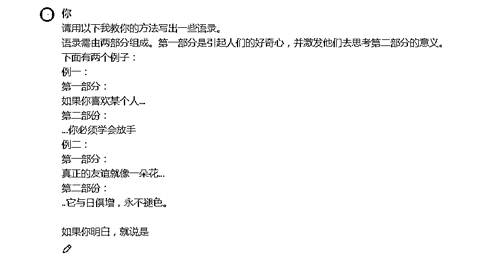
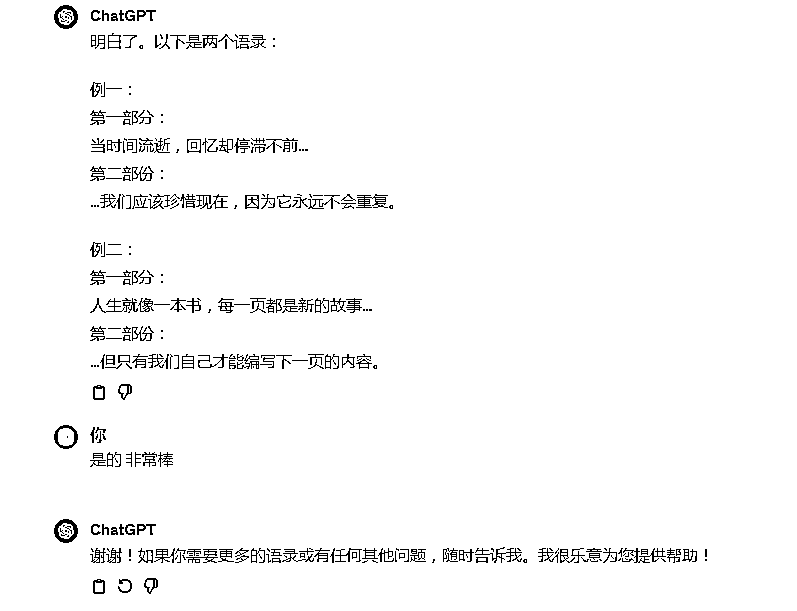
我们看到ChatGPT成功理解并给出了案例，为ChatGPT点个赞。
我们想做的是以“友谊”为主题的语录，并且受众人群是20-30岁左右，看看ChatGPT写的如何？
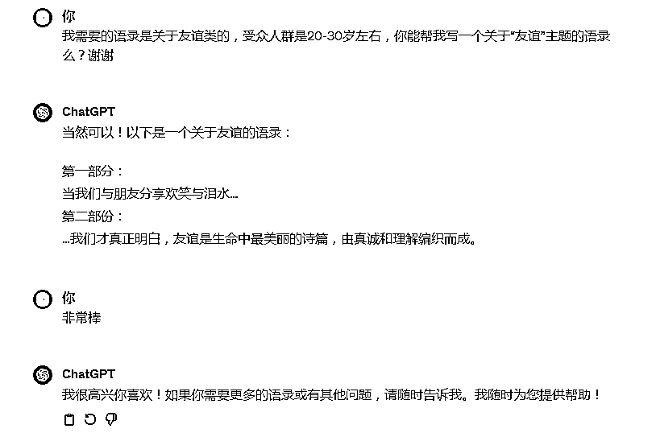
ChatGPT也是完全理解，真的是非常棒。
因为我们是需要批量生成的，最好是用表格来管理，我们给出模板让ChatGPT进行分类。
语录模板二：
我现在想让你用EXCEL表格将它们进行如下分类：
主题（友谊），第一部分（在这里，你要放置语录的第一部分），第二部分（在这里你要放置语录的第二部分）
成功的整理为 Excel 表格，Verey Good.
现在我们就可以来进行批量生成了，因为ChatGPT3.5生成的字数有限，避免卡壳，一次性生成20条。
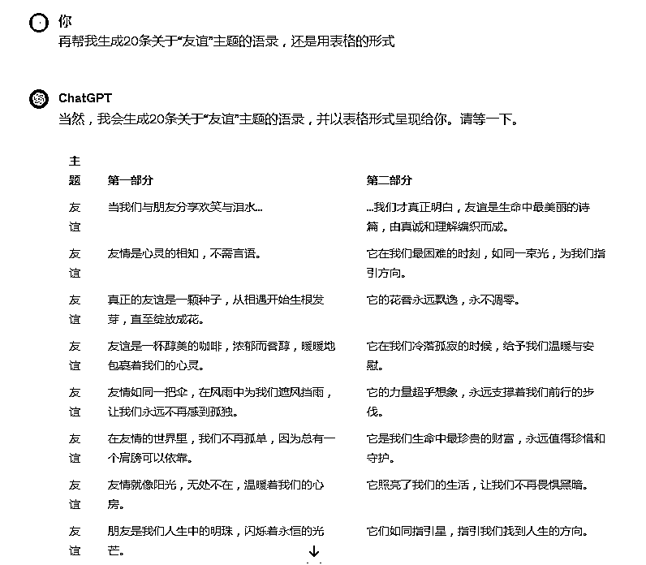
20条生成完成后，让ChatGPT继续生成。
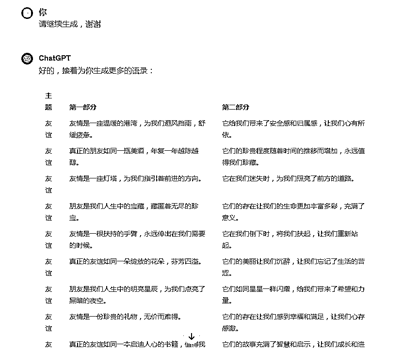
直到最后问ChatGPT有100条了么？没有ChatGPT会补足直到生成100条为止。
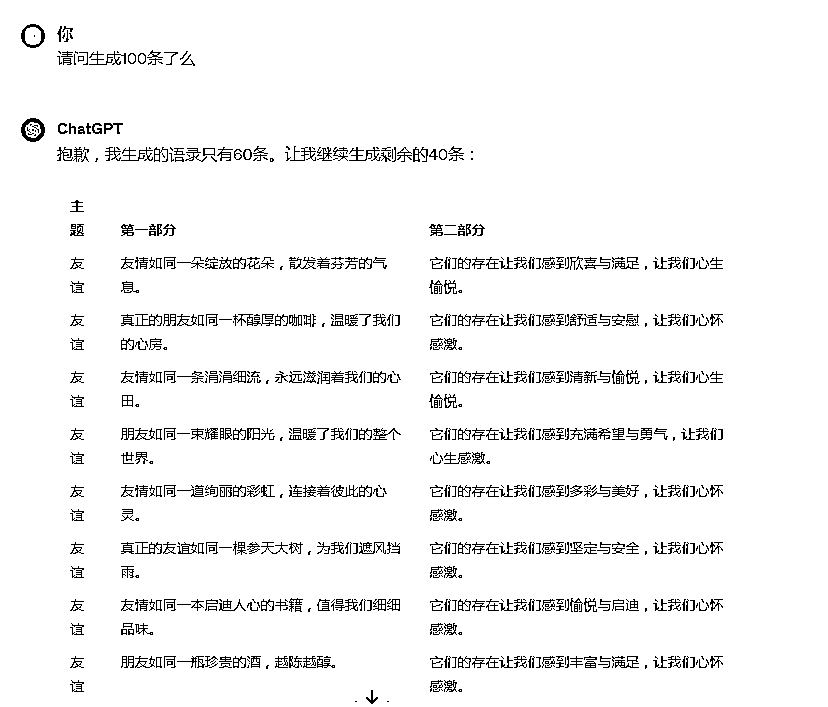
100条语录生成完毕，我们全部复制到 Excel 表格里备用。
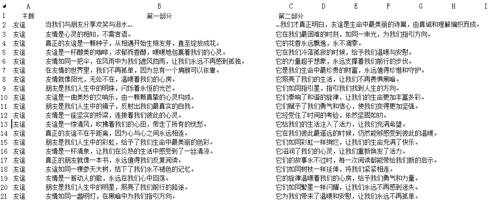
打开Canva可画登录，进入首页-视频-手机视频（9:16），创建空白画布。
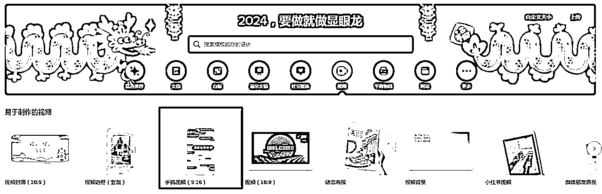
素材内搜索大自然，找到视频类型的素材，右键将视频设置为背景。
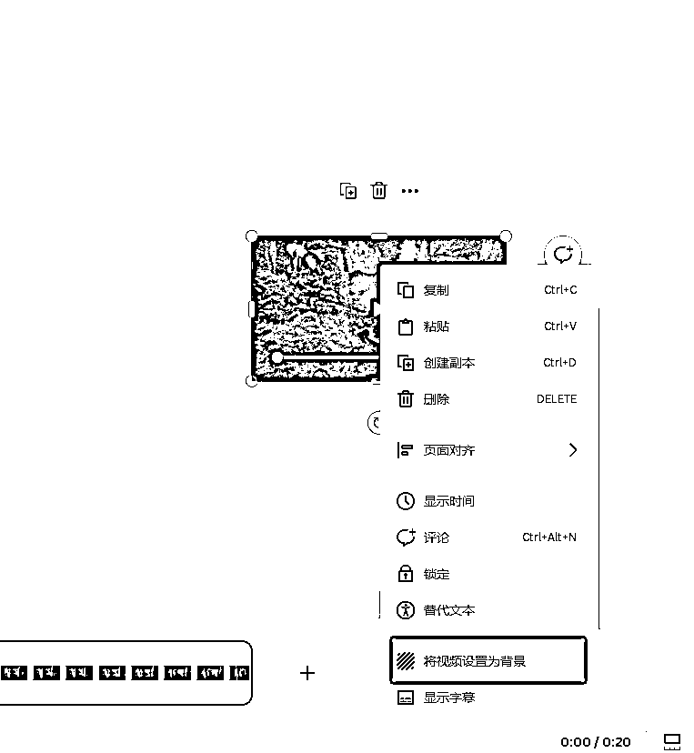
视频背景设置完成，添加语录，文字-添加文本框，文字的字体，大小，特效根据自己的喜好配置
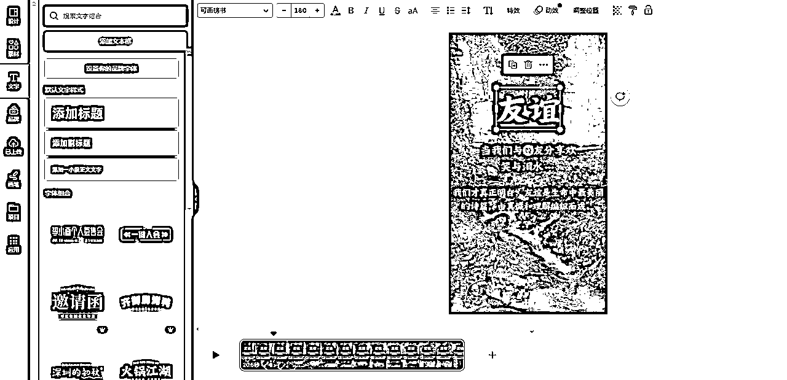
整个短视频有20秒左右，但是两行语录完全用不到，我们向左拉动视频缩短时间在10-15秒左右。
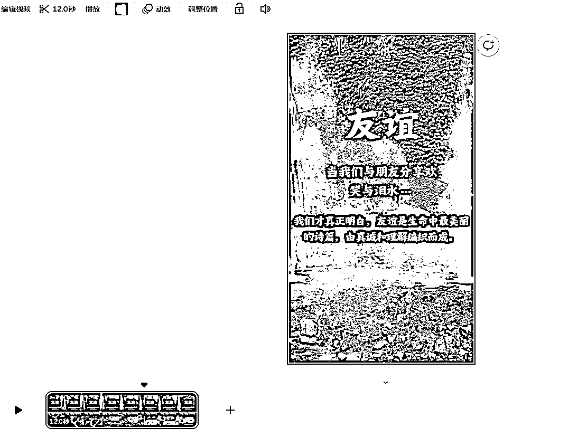
现在我们需要第一段文字的显示时间，右键点击显示时间
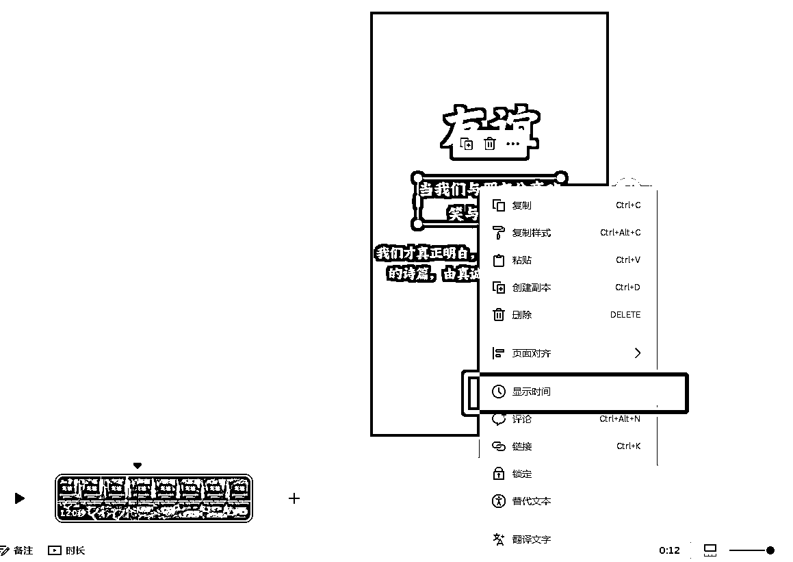
可以看出第一段文字的显示时间大概在8.6秒左右。
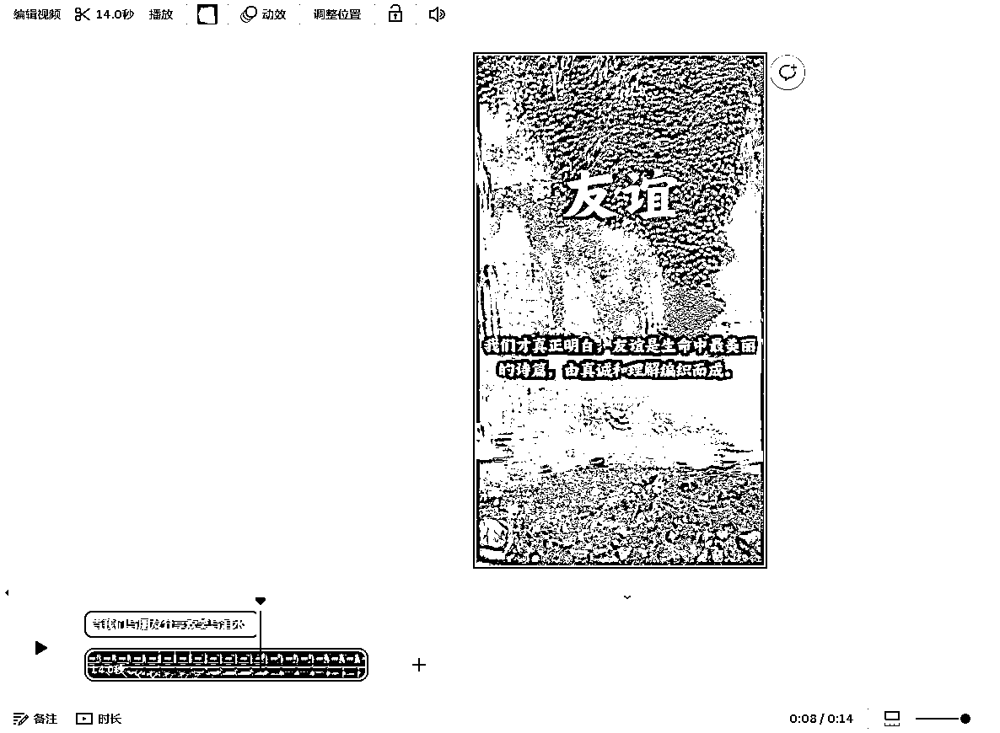
第一段文字设置完成，我们把第二段文字移至与第一段重叠，拉倒9秒的位置，这样第一段显示完毕后停顿0.4秒即动态显示第二段文字。
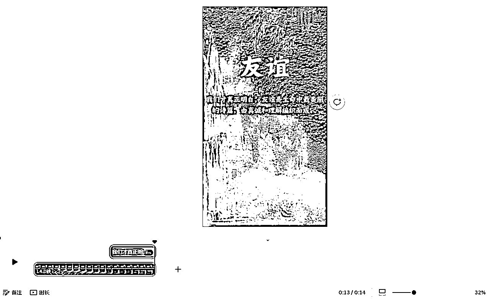
至此，短视频的模板就设计成功啦！！！
模版已经制作成功，我们就开始批量生成短视频吧！点击应用，选择批量创建。
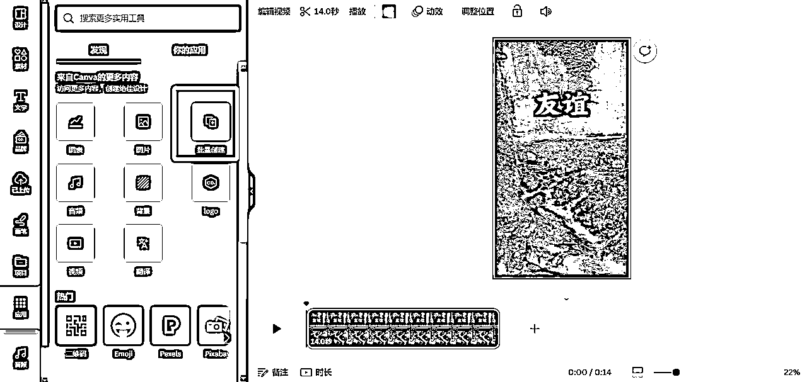
我们可以手动导入数据，也可以把刚才生成语录的 Excel 表格转换成CSV格式直接上传，也就100条左右，我就复制手工导入数据吧！
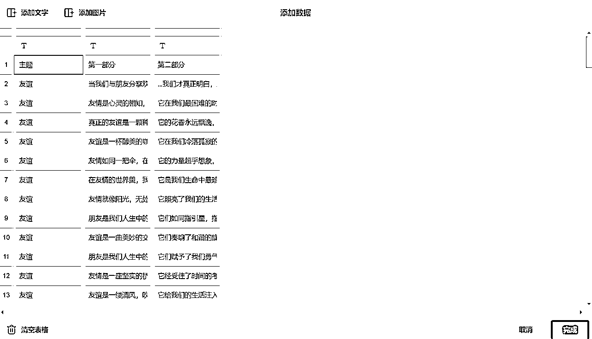
现在我们右键关联数据，友谊关联主题，以此类推进行关联数据。
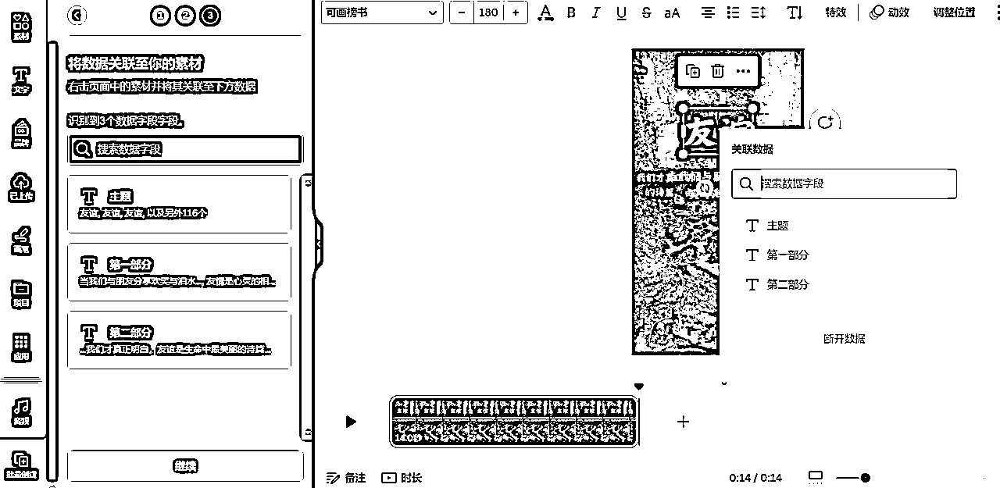
点击继续后，关联数据全部都会显示出来，可以看出一共关联数据119条，说明批量生成119条短视频。
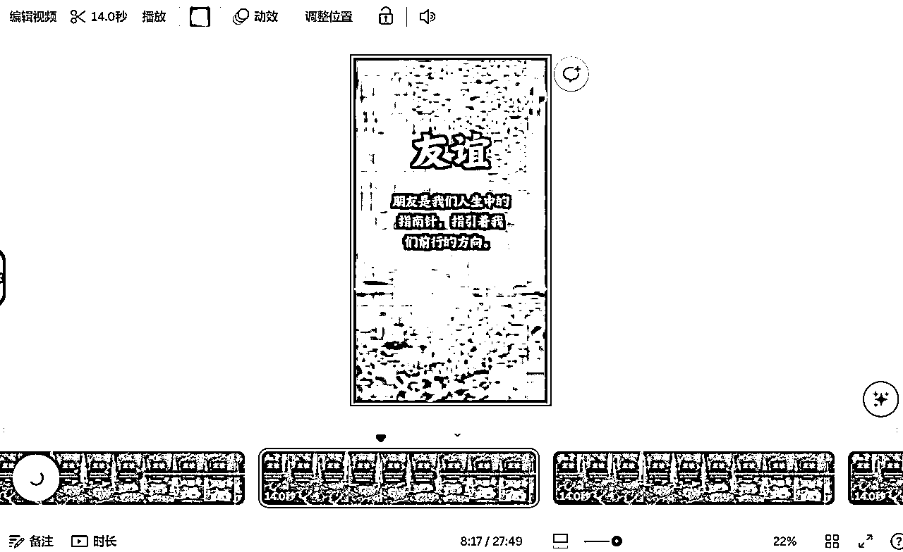
最后我们选择导出，记住一定要将页面下载为单独的文件，这里只是作为演示，所以一次性生成100多条视频，自己创作的时候可以1个视频模版生成10条视频，这样100条视频也就10条模版，发布视频的时候可以多个模版穿插发布。
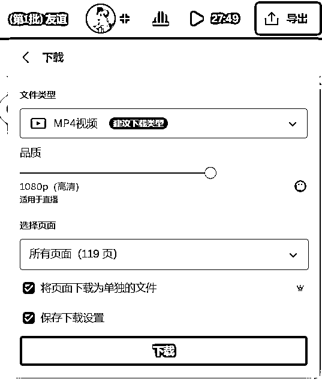